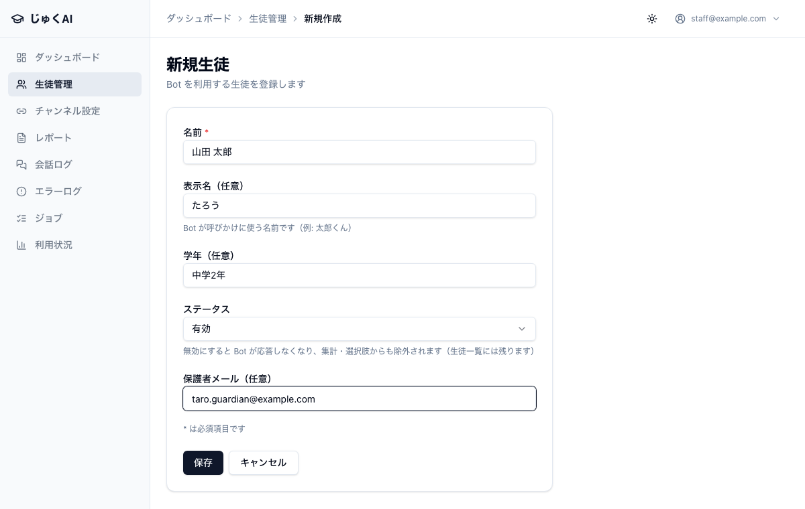
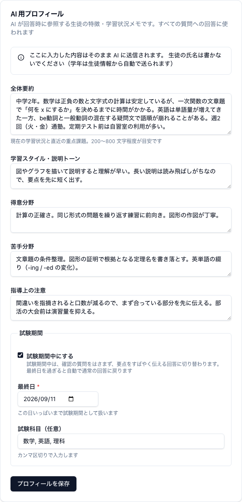
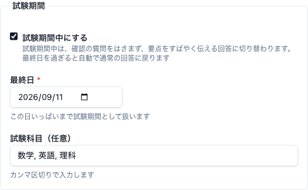
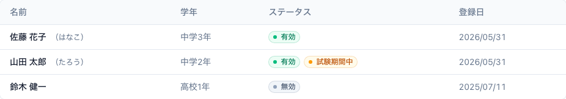
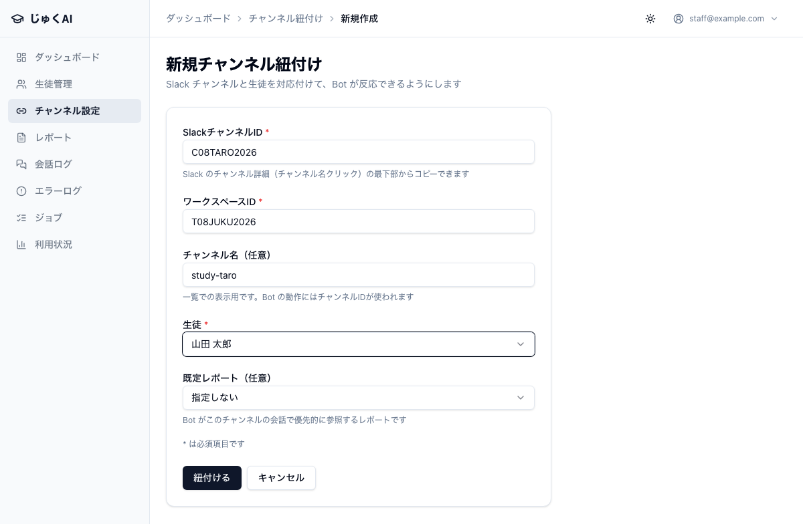
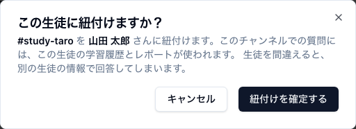
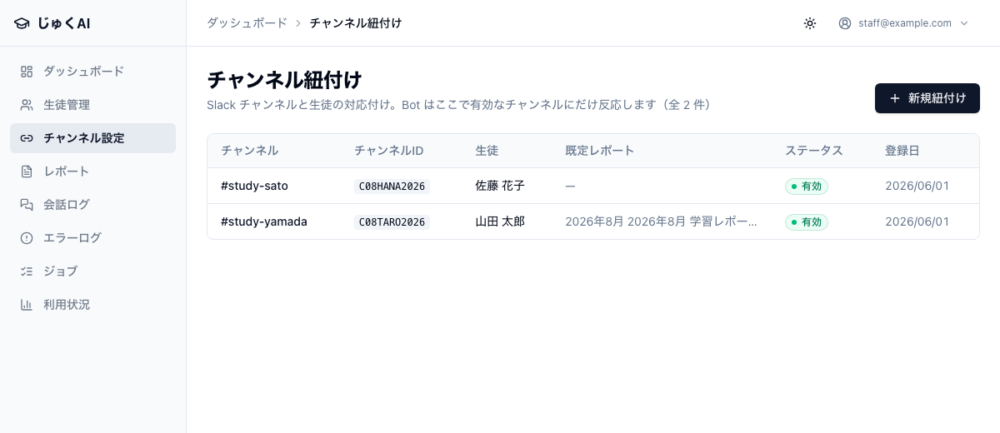

この章で分かること
① 生徒を登録する 管理画面 → 生徒管理 → 新規生徒
↓
② AI 用プロフィールを書く 管理画面 → 生徒管理 → 生徒名をクリック
↓ ★ ここが AI の答えの質を決めます
③ チャンネルを作る Slack → + → チャンネルを作成
↓
④ Bot を招待する チャンネルで /invite @じゅくAI
↓ ★ 忘れると永久に無反応です
⑤ 紐付ける 管理画面 → チャンネル設定 → 新規紐付け
↓ ★ 生徒を間違えると別の生徒の情報で答えます
生徒が質問できる状態生徒管理 → 右上の 新規生徒。

| 入力欄 | 必須 | 何を入れるか |
|---|---|---|
| 名前 | 必須 | 生徒の氏名（例：山田太郎）。管理画面の中だけで使う名前です。AI には送られません |
| 表示名（任意） | 任意 | Bot が呼びかけに使う名前（例：太郎くん） |
| 学年（任意） | 任意 | 学年だけを書きます（例：中学3年）。この欄は AI に送られます → 下の注意 |
| ステータス | — | 有効 のまま。無効にすると Bot が応答しなくなります（3-8） |
| 保護者メール（任意） | 任意 | 記録として保存されるだけです。いまはこのアドレスにメールは送られません（第 6 章） |
「学年」欄に氏名を混ぜないでください。
学年欄の内容はそのまま AI に送られます。ここに 中3 山田 のように書くと、
「氏名は AI に送らない」というこのアプリの設計を、あなたが手で破ってしまうことになります。
中学3年 ／ 高2 ／ 中3中3 山田 ／ 山田（中3） ／ 中3・A クラス山田クラスや担当講師を管理画面で見分けたいときは、「名前」欄に書いてください（名前欄は AI に送られません）。
保存 を押すと生徒一覧に戻り、生徒を登録しました と表示されます。
一覧では名前・学年・ステータス・登録日が並びます。
生徒管理 → 一覧で生徒の名前をクリック → ページ下部の AI 用プロフィール。
画面にはこう書かれています。
AI が回答時に参照する生徒の特徴・学習状況メモです。すべての質問への回答に使われます
ここに入力した内容はそのまま AI に送信されます。 生徒の氏名は書かないでください（学年は生徒情報から自動で送られます）

| 入力欄 | 何を書くか | 長さの上限 |
|---|---|---|
| 全体要約 | いまの学習状況と、直近で力を入れたいこと。この欄がいちばん効きます 画面の目安：200〜800 文字程度 |
2000 文字 |
| 学習スタイル・説明トーン | どういう説明が入りやすいか。話しかけ方の好み 例： 図を使った説明が入りやすい。長文の説明は読み飛ばしがち。 |
500 文字 |
| 得意分野 | 安定してできている単元・分野 | 500 文字 |
| 苦手分野 | つまずきやすい単元・分野と、つまずき方 | 500 文字 |
| 指導上の注意 | この生徒に対してやってほしいこと・やらないでほしいこと 例： 答えをすぐ出すと写して終わりになりやすいので、まず考え方から。 |
1000 文字 |
書き終えたら プロフィールを保存 を押します。ボタンの横に 保存しました と出ます
（ページは移動しませんので、そのまま続けて直せます）。次の質問からすぐ反映されます。
送られるのは、学年と、あなたが実際に書いた欄だけです。空欄の項目は送られません （「未設定」とも書かれません）。実際にはこんな形で AI に渡ります。
学年: 中学3年
要約: 数学は基礎計算は安定してきたが、文章題で条件を式に落とすところでつまずきやすい。
英語は単語量が足りていない。
学習スタイル: 図を使った説明が入りやすい。長文の説明は読み飛ばしがち。
得意: 一次関数の計算、比の計算
苦手: 文章題（速さ・割合）、証明の書き出し
指導メモ: 答えをすぐ出すと写して終わりになりやすいので、まず考え方から。氏名も生徒番号も入っていません。これは意図してそう作られています。 だからこそ、あなたが自由記述の欄に氏名を書いてしまうと、そこだけが例外になってしまいます。
なぜ氏名を書いてはいけないのか
生徒を指すときは 「本人」「この生徒」 と書いてください。
だめな例：山田くんは文章題が苦手 → よい例：文章題で条件を式に落とすところでつまずきやすい
| 悪い例 | なぜだめか | 良い例 |
|---|---|---|
頑張っている |
AI が回答を変えるための手がかりがゼロ。何も起きません | 宿題は毎回提出できている。分からない問題を飛ばさず質問する習慣がついてきた |
数学が苦手 |
「数学」は広すぎます。どの単元の、どういうつまずき方かが分かりません | 数学は計算は安定しているが、文章題で「何を x にするか」を決められずに止まる |
まあまあできる |
できる／できないの線が AI に伝わりません | 一次関数の式は書けるが、グラフから式を読み取る向きになると迷う |
山田くんは真面目 |
氏名が入っている。性格の評価は回答に使えません | 解き方を教えるとその場では納得するが、翌週に同じところでつまずくことが多い |
志望校は○○高校。内申は 32。 |
回答の作り方に影響しない情報です（AI に送る量だけ増えます） | 入試の関数・図形の記述問題を秋までに書けるようにしたい |
やる気がない |
AI が生徒に否定的な言い方をしかねません | 長い説明は読み飛ばしがちなので、要点を先に短く伝えると読んでもらえる |
ふだんは「未設定」が通常の状態です。設定は完全に任意で、設定しなくても何の問題もありません。 定期テスト前で余裕があれば設定する、くらいの位置づけで考えてください。
AI 用プロフィールの下にある 試験期間 の枠で設定します。
| 項目 | 内容 |
|---|---|
| 試験期間中にする | チェックを入れると設定されます |
| 最終日 | チェックを入れた場合は必須。この日いっぱいまで試験期間として扱われます |
| 試験科目（任意） | カンマ区切りで入力（例：数学, 英語）。試験期間中だけ AI に伝わります |
何が変わるか：画面の説明どおり、
試験期間中は、確認の質問をはさまず、要点をすばやく伝える回答に切り替わります。 最終日を過ぎると自動で通常の回答に戻ります


study-taro ／ 質問-山田太郎）原則 生徒 1 人 = チャンネル 1 つ です。1 つのチャンネルに 2 人の生徒を入れることはできません （「このチャンネルの質問は誰のものか」を 1 人に決める必要があるためです）。
これを忘れると、じゅくAI は永久に無反応です。 Slack は、アプリが参加していないチャンネルの発言をアプリに届けません。 そのためエラーの記録さえ残りません（そもそも届いていないので）。原因究明がいちばん面倒なミスです。
そのチャンネルの入力欄で、次のように打って送信します。
/invite @じゅくAI「じゅくAI がチャンネルに参加しました」と表示されれば完了です。
確認のしかた：チャンネル名をクリック → インテグレーション タブに「じゅくAI」が並んでいれば入っています。
ここは Slack の画面なので、この手引きには画像を貼れません。実際の画面で次を確認してください。
added じゅくAI to this channel）と出ます迷ったら、そのチャンネルで @じゅくAI テストです と送ってみるのが確実です。
🤔 が付けば入っています。何も起きなければ入っていません。
生徒を追加するたびにチャンネル作成 → 招待がセットで必要です。
Bot をチャンネルから外すと、その時点で反応しなくなります（SLACK_POST_FAILED のエラーが出ることもあります）。
必要なのはチャンネル「名」ではなく「ID」です。 チャンネル名は後から変えられてしまうため、このアプリは変わらない値であるチャンネル ID を 「誰の質問か」の判定に使っています。管理画面に入れるチャンネル名は一覧での見た目のためだけです。
C で始まる）ここも Slack の画面なので、この手引きには画像を貼れません。見分けるポイントだけ補っておきます。
ブラウザで Slack を使っている場合は、アドレス欄の末尾（.../messages/C01ABCDEFGH）でも確認できます。
非公開チャンネルでは G で始まることもあります。どちらでも登録できます。
T で始まる）塾のワークスペース全体で 1 つの値なので、生徒ごとに調べ直す必要はありません。一度メモしておけば使い回せます。
ブラウザで Slack を開いたときのアドレス
https://app.slack.com/client/T01ABCDEFGH/C01... の最初の ID がそれです。
分からない場合は管理者に聞いてください。
紐付けとは、「このチャンネルに来た質問は、誰のものか」を決める設定です。 じゅくAI は生徒が名乗るのを待ちません。チャンネル ID だけを見て「誰の質問か」を決めます。
紐付けを間違えると、別の生徒の学習履歴とレポートを使って回答します。
たとえば A さんのチャンネルを間違えて B さんに紐付けると、A さんの質問に対して B さんの AI 用プロフィールと B さんの月次レポートを踏まえた回答が返ります。 AI が「レポートを見る限り、〜が課題だったね」と、他人の情報を A さんに向かって話してしまう状態です。 これは個人情報の事故です。
気づいたときの手順は 第 5 章 にあります。まず管理者に緊急停止を依頼してください。
チャンネル設定（開くと「チャンネル紐付け」）→ 右上の 新規紐付け。

| 入力欄 | 必須 | 入れる値 | 注意 |
|---|---|---|---|
| SlackチャンネルID | 必須 | 3-6 で調べた C01ABCDEFGH |
大文字・数字のみ。小文字が混ざったり # を付けると
チャンネルIDの形式が正しくありません（例: C01ABCDEFGH） と出ます |
| ワークスペースID | 必須 | T01ABCDEFGH | 塾で 1 つの値です |
| チャンネル名（任意） | 任意 | study-taro（# は不要） |
一覧での表示用だけです。Bot の動作にはチャンネル ID が使われます |
| 生徒 | 必須 | このチャンネルの持ち主 | ここを間違えないでください。有効な生徒だけが選択肢に出ます |
| 既定レポート（任意） | 任意 | ふだんは 指定しない のままで大丈夫 | 生徒を選ぶまで操作できません。承認済みのレポートだけが候補に出ます |
紐付ける を押すと、確認のダイアログが出ます。
この生徒に紐付けますか？
#study-taro を 山田太郎 さんに紐付けます。このチャンネルでの質問には、この生徒の学習履歴とレポートが使われます。
生徒を間違えると、別の生徒の情報で回答してしまいます。
ここで必ず、チャンネルと生徒名の組み合わせを声に出して読んで確かめてください。
合っていれば 紐付けを確定する、違っていれば キャンセル です。
確定すると チャンネルを紐付けました と表示されて一覧に戻ります。

@じゅくAI テストです と送り、返ってきた回答がその生徒あての内容になっているか
（会話ログでも、正しい生徒名の行として記録されているか確認できます）あとから変更できるのは「チャンネル名（表示用）」と「ステータス」だけです。 チャンネル ID と生徒の対応を間違えた場合は、紐付けを作り直します。
紐付けの作成・変更は「情報」レベルの記録としてエラーログに残ります
（CHANNEL_BINDING_CREATED / CHANNEL_BINDING_UPDATED）。
あとから「いつ誰が何を変えたか」をたどれます。
| 出たエラー | 意味 | 対処 |
|---|---|---|
このチャンネルはすでに紐付けされています | 同じチャンネル ID の登録がもうある | 一覧から既存の紐付けを開いて内容を確認する（1 チャンネル = 1 生徒） |
チャンネルIDの形式が正しくありません | 小文字混じり／# 付き／チャンネル名を入れている |
3-6 の手順で ID を取り直す |
ワークスペースIDの形式が正しくありません | T で始まっていない | 管理者にワークスペース ID を確認する |
ログインが必要です | ログインが切れた | ログインし直してからやり直す |
チャンネル設定の一覧には チャンネル・チャンネルID・生徒・既定レポート・ステータス・登録日 が並びます。 月に 1 回は、この一覧をひととおり見て、チャンネルと生徒の対応が合っているか確認してください。

生徒を削除しないでください。 会話ログ・月次レポート・利用実績がその生徒に紐付いています。消すと過去の記録が追えなくなります。 正しい操作はステータスを「無効」にすることです。
| 無効にすると | どうなるか |
|---|---|
| Bot の応答 | 完全に沈黙します。メンションしても案内文すら返りません |
| 集計 | ダッシュボードの生徒数や各種集計から外れます |
| 選択肢 | レポート作成・チャンネル紐付けの「生徒」の選択肢に出なくなります |
| 記録 | 残ります。生徒一覧・会話ログ・レポートから引き続き見られます |
| 記録されるログ | そのチャンネルで質問が来ると PERSON_INACTIVE（情報）が残ります |
復塾したら、ステータスを 有効 に戻すだけで元どおり動きます。
チャンネル設定 → 該当の行を開く → ステータス を 無効 に。 この場合、そのチャンネルでの質問には 「このチャンネルにはまだBotの設定が完了していないみたい…」という案内文が返るようになります。
Slack のチャンネル自体はアーカイブしておくと、生徒側にも「終わった」ことが伝わります。